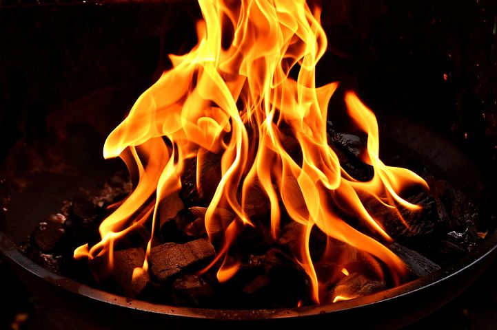
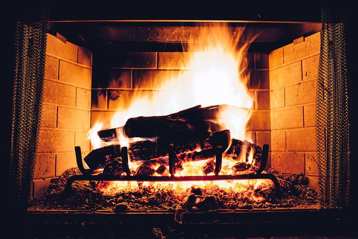
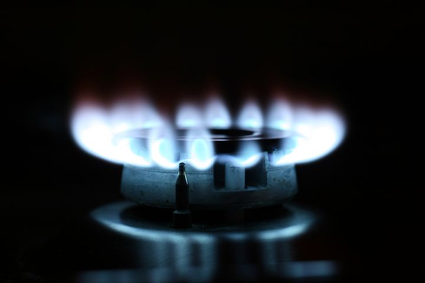
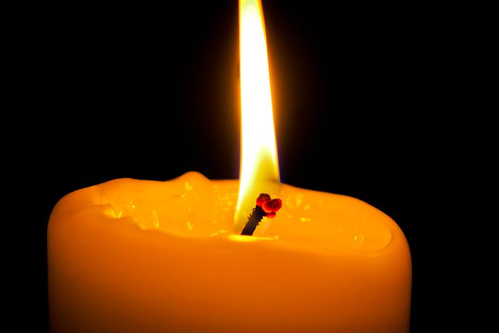

Step 1: Choose your heat source
Proceed to Step 2 ===>
Campfire

If you are out camping, the easiest way to melt marshmallows is to make a campfire. Check out the U.S. Forest Service web site and video for more information.
Campfire Information from the U.S. Forest Service
Video from the U.S. Forest Services on Making and Extinguishing a Campfire
Fireplace

On cold winter nights, you might want to stay in and roast your marshmallows over an indoor fire.
Stove

No fireplace, no problem! Any burner you use to cook food with work.
Candle

In case of emergency, even a candle will do. You might be limited to roasting only one marshmallow at a time.